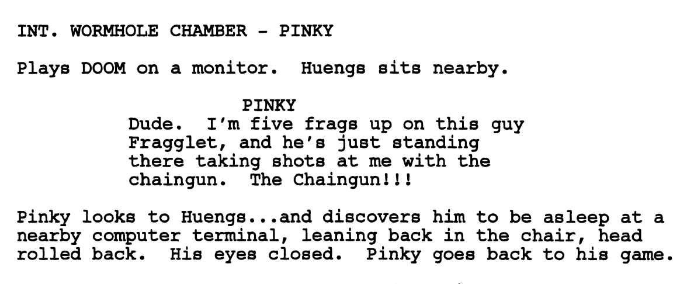

dave callaham: Can I ask you a DOOM questionI’m understandably skeptical when people come to me making bold claims which could turn out to be elaborate pranks. But he continued:
dave callaham: sorry to bother you
fraggle: ok
dave callaham: This is going to come off strange but it’s legit
dave callaham: I am writing the DOOM movie for Warner Bros
dave callaham: I need help with a scene
dave callaham: I never played multiplayer and I need help with a line of dialoguie
dave callaham: would you help me with that?
fraggle: sounds rather unbelievable :)
dave callaham: I knowCallaham’s first spec, “Horesemen,” was bought by Focus for Radar and Platinum Dunes to produce. He’s scripting “Doom” at Warner Bros. for producers John Wells and Lorenzo di Bonaventura, and has a blind script deal at WB to follow. U’s Mary Parent and Damien Saccani will supervise the space-station thriller.
dave callaham: hold on
dave callaham: rwad this
dave callaham: this was in Variety this morning
dave callaham: it’s an article about a pitch I just sold to Universal
dave callaham: jusst go to the bottom
dave callaham: After getting Universal to the altar with an overall deal following “American Wedding,” Adam Herz has made his first project purchase. Dave Callaham has been set to write an untitled thriller for Herz, who has named his U-based company Terra Firma Films.
dave callaham: If you’re not convinced I understand i will ask someone elseYou can read the article here along with Dave’s Wikipedia article. Despite still remaining skeptical, I was aware that a Doom movie was supposedly in production, although news was spurious and it was unclear what the status of its development was.
Dave had got my contact details from the Doomworld forums. It seems that he had already tried to get help from other fans, but everyone else was similarly skeptical, and he was up against a deadline:
dave callaham: I just need help for five minutesIf I was unsure why a Hollywood scriptwriter needed my assistance, things subsequently became clearer:
fraggle: ok sure
dave callaham: no one will help or believe me, and I have to have this draft in tonight for the budget meeting tomorrow
dave callaham: worst case you help me and nothing happens and you lose two minutes
dave callaham: best case
dave callaham: you just wrote a line for the DOOM movie
dave callaham: so can i run this thing by you?
fraggle: ok
fraggle: go ahead
dave callaham: Two people in a room playing muliplayer doom against each otherSome of the people who I’ve told this story have found the premise cliched. They’re probably right, but it’s hard to do much that’s truly original in an action movie, least of all one based on a video game. Personally I think it’s nice that he wanted to include a nod to the original games, which at this point were already over 10 years old and firmly ingrained in people’s nostalgia for the past.
dave callaham: scene is sort of an inside joke
dave callaham: one of them is about to get whacked
dave callaham: all I need
fraggle: whacked?
dave callaham: eaten
fraggle: fragged?
dave callaham: no i mean in real life a demon is about to eat him
fraggle: ah
dave callaham: he’s a charcter in the movie playing the game
Dave wanted to know what someone might say when playing deathmatch. We bounced a bunch of ideas around and some of them couldn’t be used: it couldn’t reference the BFG since that was a big reveal at the end of the movie. But we eventually decided the chaingun was a more acceptable substitute and came up with something that worked for him:
fraggle: standing around is usually a bad thing to doAnd then:
dave callaham: the chaingun iss clean
dave callaham: I ddon’t use the chaingun so if you can say somethign about that it would work
fraggle: like you want to move around a lot so you dont get hit
fraggle: so standing around shooting someone with a chaingun would be pretty dumb
dave callaham: ok
dave callaham: so
dave callaham: “I’m up 5 frags on this guy and he just keeps standing there taking shots with the chaingun”
dave callaham: do you play with a handle or somethingI later realised that fraggle might be trademarked and therefore problematic, so I suggested he use my alternate handle of fragglet instead. And then for the next year and a half I was left wondering: was this all some kind of lame prank? Am I going to be a minor star in a Hollywood movie? Are people going to watch the moving and then be asking me how the heck I pulled that off?
dave callaham: like a name >
fraggle: fraggle
dave callaham: i will try to drop it in iff you want
dave callaham: “I’m up on this guy Fraggle…”
dave callaham: then you’ll be the one getting your ass beat though
dave callaham: but I’dd be happy to try it
dave callaham: if you want
fraggle: haha
fraggle: that would be way cool :)
Doom was released in October 2005, starring Karl Urban (better known as Éomer from Lord of the Rings) and Dwayne “The Rock” Johnson. It was a terrible film. My line didn’t make it to the movie. But a couple of years later the original script surfaced which did contain it. You can read it here. The reactions to this version were “not positive” either. But perhaps the movie as released had left a sour taste in peoples’ mouths.  Dave got a lot of criticism for how he wrote the film. Doom’s original (albeit paper-thin) plot is about demons invading a military base on a Martian moon — originally envisioned as a cross between Alien and the Evil Dead series. The movie changed it to a plot involving genetic experiments gone wrong — Doom’s iconic demons weren’t even demons any more!
But maybe he got more criticism than he deserved. In an open letter to Doom fans published before the film was even released, he tried to defend his work and explain that he had tried to stay true to the original games:
I am the only person involved creatively who has ever made any attempt to open discourse with the game’s internet fanbase, and I am the only person involved who has continually kept the ideals of the game first and foremost in mind. I very truthfully believe that my unapologetic and hyper-violent script would have been a Doom fan’s movie dream come true. However, since my involvement, the film has steadily moved away from the realm of fandom and more toward the realm of traditional Hollywood interests.Who knows what Dave’s vision of the Doom movie could have been like? There are very few movies based on video games that have ever turned out to be any good. But maybe that’s the point. Game adaptations are money-making schemes — exploiting the infamy of a franchise in one space to make money in another. Who in that situation wants to try anything risky or original? There’s a job to be done, a movie to deliver, and tickets to be sold. But it would would have been cool to have been immortalized as the dork with the chaingun.